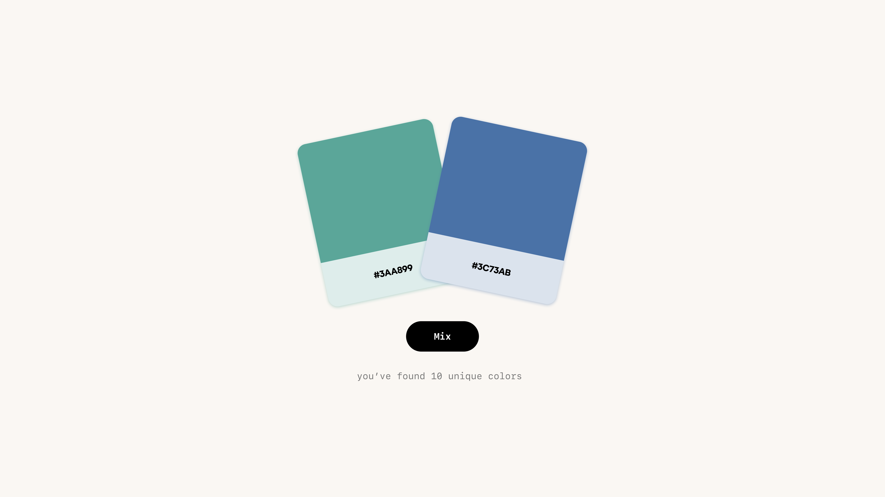

Color Research
Discover colors
Color Research is an experiment where you blend two hex colors like paint swatches to discover all 16,777,216 hex colors. The goal is to discover all of these colors as a community.
Mixing
When mixing colors there are a few fun things that happen. First you get the animation of the colors combining, then the accent color of the website (and the favicon) take on the new color, and lastly you get the opportunity to name the new color you discovered.
Collection
The collection is a shared gallery of every color we have discovered.
Counter
The number of colors discovered loads in with this fun little animation.